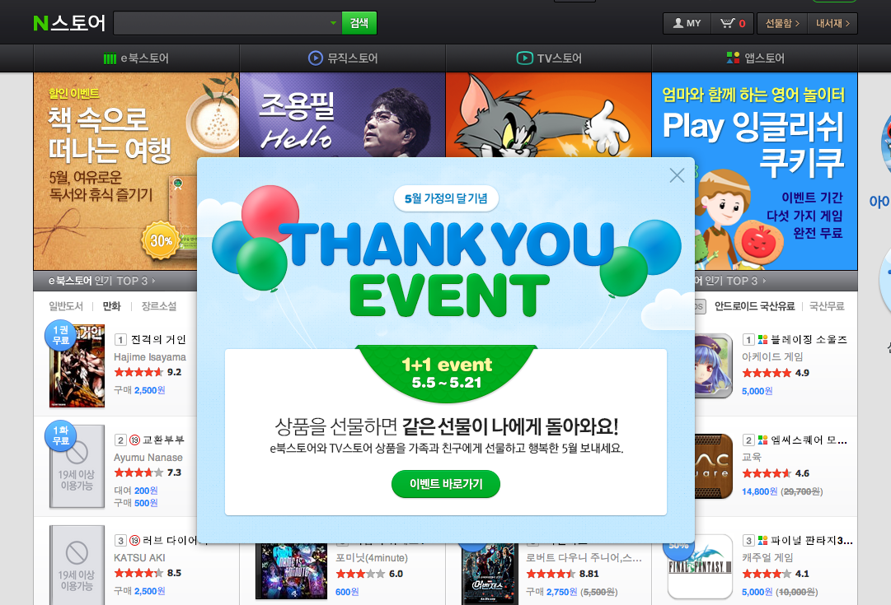

이 페이지의 레이어 팝업. 접근성이 있을까요?

해결해야 하는 문제 정리
- 키보드 접근성
- 사용자의 요구에 따른 실행
- 스크린리더
키보드 접근성 - 접근성 고려 없는 레이어 팝업
키보드 접근성 - 초점을 레이어 팝업 안에 가두기
키보드 접근성 - 레이어 닫을 때 초점 호출 버튼으로 돌려주기
사용자의 요구에 따른 실행
버튼을 눌러서 레이어 팝업을 표시한 경우?
사용자의 요구에 따른 실행
페이지 진입 시 뜬 경우?
WAI-ARIA
<button type="button" id="open_popup">레이어 팝업 열기</button>
…
…
…
<div id="popup" role="dialog" aria-labelledby="popup_title">
<h2 id="popup_title">중요공지</h2>
…
</div>
WAI-ARIA 적용된 예제 - JAWS 13
실행 테스트
WAI-ARIA 적용된 예제 - 센스리더
실행 테스트
WAI-ARIA 규격을 지켜 제작된 jQuery UI를 사용하세요.
- Dialog (레이어 팝업)
- 탭, 아코디언
- 자동완성
- 메뉴
- …
3줄 요약
- 자바스크립트로 만든 UI는 키보드, 스크린리더 테스트를!
- 어떻게 구현해야 할지 모르겠다면 WAI-ARIA 규격을 참고한다.
- 그마저도 어렵다면 접근성 있게 만들어놓은 라이브러리를 활용한다.